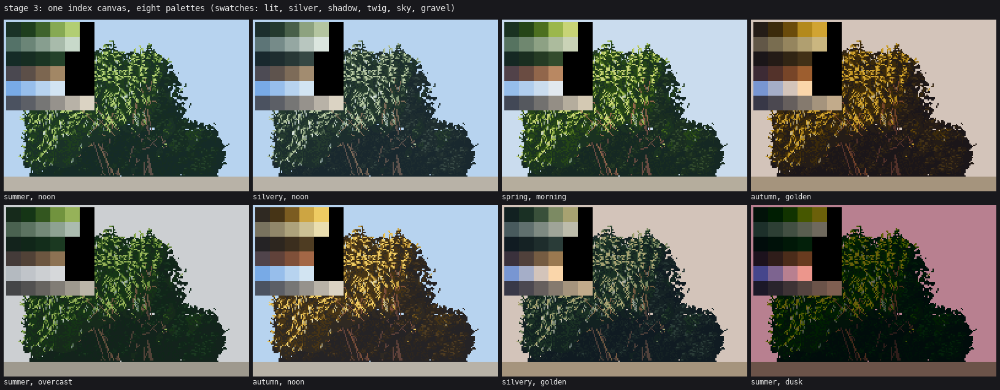
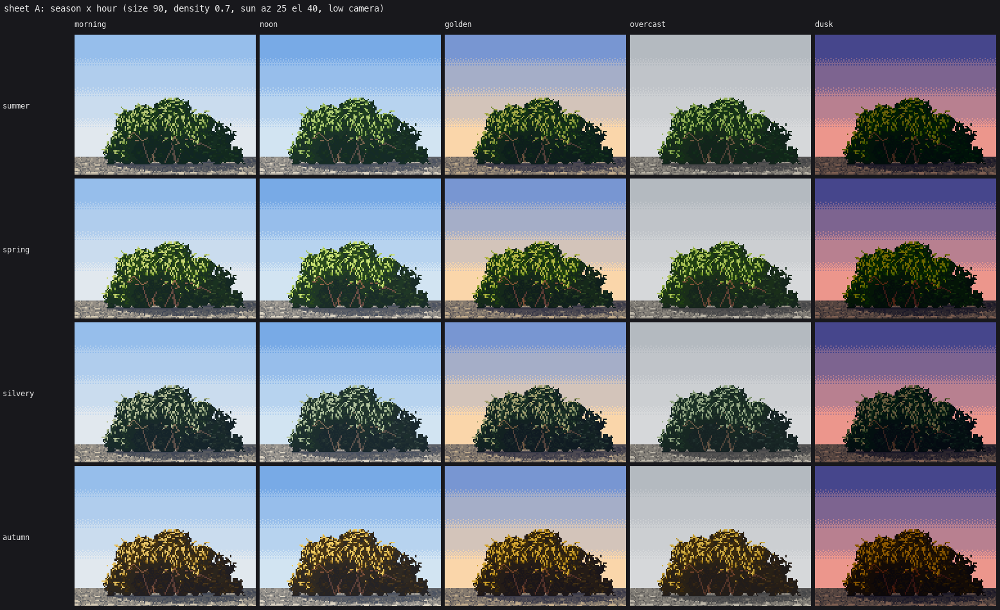

6. Palette as light
Back to the tutorial. Code: code/palette.py, Canvas in code/wpaint.py, band_palette in code/willow.py, scene_palette in code/context.py.
Paint indices, not colours. Every pixel of my canvas is a material and a step on that material's ramp. Season, hour, distance and species are all palettes applied at the very end. The studio critic judged this system (sheet A) ready.

One index canvas under eight palettes. Swatches top left: lit, silver, shadow, twig, sky, gravel.
The canvas
# wpaint.py
class Canvas:
def __init__(self, w, h):
self.mat = np.zeros((h, w), np.uint16) # which material
self.step = np.zeros((h, w), np.uint8) # how far up its ramp
def render(self, pal): # pal: {(mat, step): (r, g, b)}
...
The willow uses four foliage materials: LEAF (the lit family: 2 base steps, a middle step, 2 mark steps), LEAFS (the shadow family, 4 steps), SILVER (undersides, 5 steps) and STEM (twigs, 4 steps). Keeping the shadow family as its own material, not the bottom of one long ramp, is what lets each family be coloured on its own.
Ramps walk from ambient to sun
Build every ramp in OKLab between a dark and a light colour. Pull the darks toward the sky's ambient colour and the lights toward the sun's colour. Light is a hue shift, not just a value:
def ramp(dark, light, n, sun, amb, warm=0.25, cool=0.3):
for i in range(n):
t = i / max(n - 1, 1)
c = to_lab(dark) * (1 - t) + to_lab(light) * t
c = c * (1 - warm * t ** 1.5) + to_lab(sun) * warm * t ** 1.5
c = c * (1 - cool * (1 - t) ** 2) + to_lab(amb) * cool * (1 - t) ** 2
out.append(to_rgb(c))
A season is five pairs of anchor colours (lit base, lit leaves, silver, twig, shadow); an hour is a sun colour, an ambient colour, a sky, and a key that scales all lightness (dusk 0.62, golden 0.88). warm is 0.12 at noon and overcast and 0.3 otherwise.
SEASONS["autumn"] = dict(base=((36, 26, 12), (70, 52, 22)), leaf=((170, 128, 40), (236, 196, 72)),
silver=((170, 156, 110), (232, 220, 170)), twig=((56, 30, 22), (150, 84, 48)),
shadow=((22, 16, 12), (78, 60, 34)))
HOURS["golden"] = dict(key=0.88, sun=(255, 196, 120), amb=(110, 110, 170), sky=((120, 150, 210), (250, 214, 170)))
The lit family is assembled so its base and marks stay far apart, which is what keeps contrast inside the mark:
lit = [base[0], base[1], mix(base[1], leaf[0], 0.55), leaf[1], leaf[2]]
Near bases are near black. My first near bush used Ferrari's middle-distance hedge values for its base and came out slate grey. His foreground bush's base is almost black.

Sheet A: season × hour, one geometry.
Depth bands
Distance lifts the darks toward the haze strongly and leaves the lights nearly alone (the master-copy student measured this on Ferrari):
def far(c, k):
lab = to_lab(c); lab[0] *= key
return mix(to_rgb(lab), hz, np.clip(depth * k, 0, 0.95))
for i, c in enumerate(lit):
P[(LEAF, i)] = far(c, 0.9 - 0.12 * i) # dark steps move far, light steps barely
Each depth band gets its own copy of the foliage materials, offset by 30 (BAND), so a whole scene with four distances is one canvas and one palette: band_palette(season, hour, depths=(0, 0.3, 0.55, 0.8)).
A palette per species
In a mixed scene each plant group needs its own season. One palette per scene turned my alders gold in October; alders drop their leaves green-brown. Each species group gets a material offset (210, a multiple of the band offset so band arithmetic still works) and its own palette:
GROUP_SEASON["autumn"] = {0: "autumn", 1: "alder_autumn", 2: "cottonwood_autumn", 3: "dogwood_autumn", 4: "autumn"}
img = cv.render(scene_palette("autumn", "golden", groups=GROUP_SEASON["autumn"]))
The materials went 16-bit when I added groups: offsets past 255 would have wrapped silently in 8 bits.

Gold willow, green-brown alder, yellow cottonwood, purple-red dogwood, one canvas.
Still short
Back-lit leaves should use a warmer, yellower ramp than sunlit ones, and at golden hour the lit family should swing further toward orange on the sun-side rims. Both are palette-only changes I didn't get to.